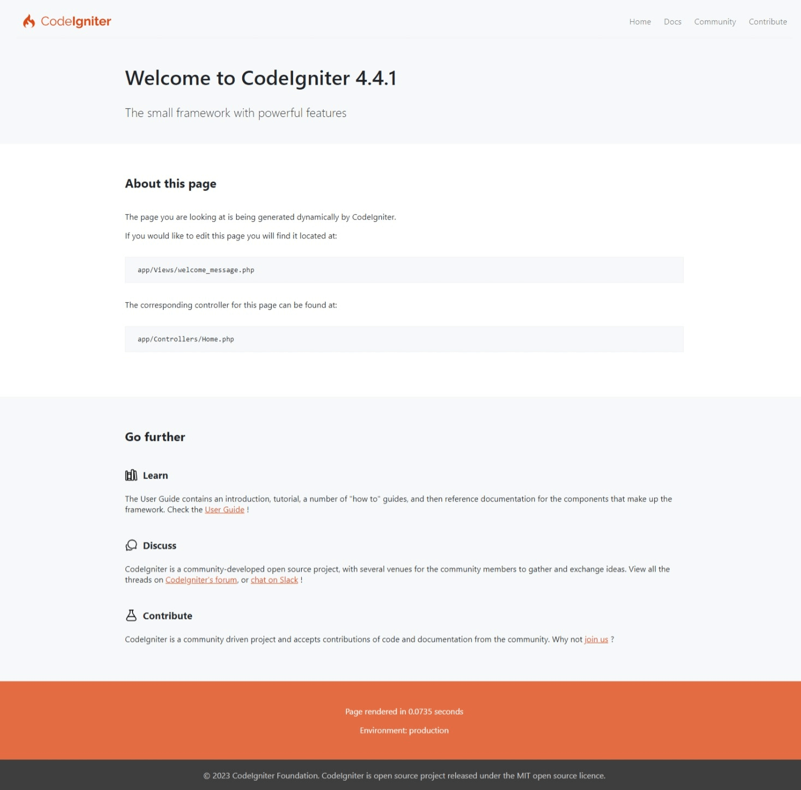
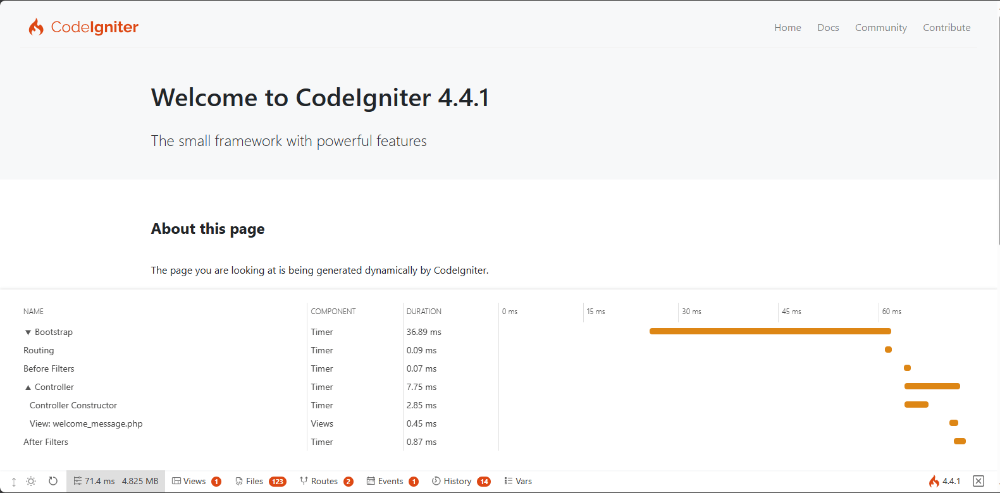

첫 번째 애플리케이션 만들기
개요
이 튜토리얼은 CodeIgniter4 프레임워크와 MVC 아키텍처의 기본 원칙을 소개하기 위해 마련되었습니다. 기본적인 CodeIgniter 애플리케이션이 어떻게 구성되는지 단계별로 보여줍니다.
PHP에 익숙하지 않다면 계속 진행하기 전에 W3Schools PHP Tutorial을 확인해 보시기 바랍니다.
이 튜토리얼에서는 기본적인 뉴스 애플리케이션을 만들게 됩니다. 먼저 정적 페이지를 로드할 수 있는 코드를 작성하는 것부터 시작합니다. 다음으로 데이터베이스에서 뉴스 항목을 읽어오는 뉴스 섹션을 만듭니다. 마지막으로 데이터베이스에 뉴스 항목을 생성하기 위한 폼을 추가합니다.
이 튜토리얼은 주로 다음에 중점을 둡니다:
모델-뷰-컨트롤러(MVC) 기초
라우팅 기초
폼 유효성 검사
CodeIgniter의 모델을 사용한 기본적인 데이터베이스 쿼리 수행
전체 튜토리얼은 여러 페이지로 나뉘어 있으며, 각 페이지는 CodeIgniter 프레임워크 기능의 작은 부분을 설명합니다. 다음 페이지들을 진행하게 됩니다:
소개(현재 페이지)에서는 무엇을 배울지에 대한 개요를 제공하고, 기본 애플리케이션을 다운로드하여 실행합니다.
정적 페이지에서는 컨트롤러, 뷰 및 라우팅의 기초를 배웁니다.
뉴스 섹션에서는 모델을 사용하기 시작하고 기본적인 데이터베이스 작업을 수행합니다.
뉴스 항목 만들기에서는 더 고급 데이터베이스 작업과 폼 유효성 검사를 소개합니다.
결론에서는 추가 학습을 위한 지침과 기타 리소스를 제공합니다.
CodeIgniter 프레임워크 탐색을 즐겨보세요.
설치 및 실행
CodeIgniter 설치
사이트에서 수동으로 릴리스를 다운로드할 수도 있지만, 이 튜토리얼에서는 권장되는 방식인 Composer를 통해 AppStarter 패키지를 설치하겠습니다. 명령줄에 다음을 입력하세요:
composer create-project codeigniter4/appstarter ci-news
이렇게 하면 애플리케이션 코드가 포함된 ci-news라는 새 폴더가 생성되며, CodeIgniter는 vendor 폴더에 설치됩니다.
개발 모드 설정
기본적으로 CodeIgniter는 운영(production) 모드로 시작됩니다. 이는 사이트가 라이브된 후 설정이 잘못되었을 경우 보안을 강화하기 위한 안전 기능입니다. 먼저 이를 수정해 보겠습니다. env 파일을 .env로 복사하거나 이름을 바꾼 후 엽니다.
이 파일에는 서버별 설정이 포함되어 있습니다. 즉, 버전 관리 시스템에 민감한 정보를 커밋할 필요가 없습니다. 이미 가장 일반적으로 사용되는 설정들이 주석 처리된 채로 포함되어 있습니다. CI_ENVIRONMENT가 포함된 줄의 주석을 제거하고 production을 development로 변경합니다:
CI_ENVIRONMENT = development
개발 서버 실행
이제 브라우저에서 애플리케이션을 확인할 차례입니다. Apache, nginx 등 원하는 서버를 통해 서비스할 수 있지만, CodeIgniter에는 PHP의 내장 서버를 활용하여 개발 머신에서 빠르게 실행할 수 있는 간단한 명령이 포함되어 있습니다. 프로젝트 루트의 명령줄에서 다음을 입력하세요:
php spark serve
환영 페이지
이제 브라우저에서 올바른 URL로 접속하면 환영 화면이 나타납니다. 다음 URL로 이동하여 지금 확인해 보세요:
http://localhost:8080
그러면 다음과 같은 페이지가 나타날 것입니다:

이는 애플리케이션이 작동하며 변경을 시작할 수 있음을 의미합니다.
디버깅
디버그 툴바
이제 개발 모드이므로 애플리케이션 오른쪽 하단에 CodeIgniter 불꽃 아이콘이 보일 것입니다. 이를 클릭하면 디버그 툴바가 나타납니다.
이 툴바에는 개발 중에 참조할 수 있는 유용한 항목들이 많이 포함되어 있습니다. 이는 운영 환경에서는 절대 표시되지 않습니다. 하단의 탭을 클릭하면 추가 정보가 나타납니다. 툴바 오른쪽의 X를 클릭하면 CodeIgniter 불꽃 모양의 작은 사각형으로 최소화됩니다. 이를 다시 클릭하면 툴바가 다시 나타납니다.

에러 페이지
이 외에도 CodeIgniter는 프로그램에서 예외나 다른 에러가 발생했을 때 도움이 되는 에러 페이지를 제공합니다. app/Controllers/Home.php를 열고 에러를 발생시키기 위해 일부 라인을 수정해 보세요(세미콜론이나 중괄호를 제거하면 됩니다!). 그러면 다음과 같은 화면이 나타날 것입니다:

여기서 주의 깊게 살펴볼 몇 가지 사항이 있습니다:
상단의 빨간색 헤더 위에 마우스를 올리면 새 탭에서 DuckDuckGo.com을 열어 해당 예외를 검색할 수 있는 search 링크가 나타납니다.
백트레이스(Backtrace)의 각 라인에서 arguments 링크를 클릭하면 해당 함수 호출에 전달된 인자 목록이 펼쳐집니다.
나머지 부분은 화면을 보면 명확하게 알 수 있을 것입니다.
이제 시작하는 방법과 약간의 디버깅 방법을 알았으니, 이 작은 뉴스 애플리케이션 빌드를 시작해 봅시다.